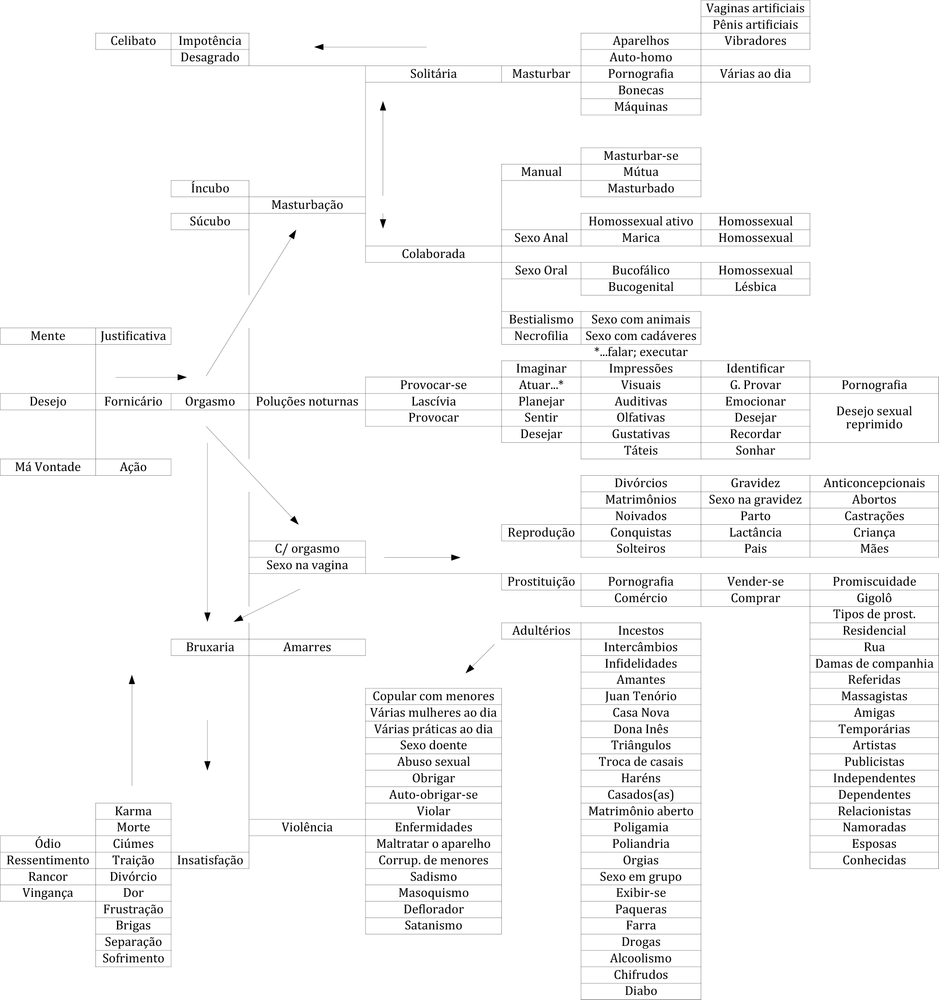

Conferência nº 43
DIVERSOS TIPOS DE EUS LUXURIOSOS
Vamos ver este tema que é muito importante para o trabalho da Alquimia; é definitivo o que vamos ver hoje e o que vocês estão estudando. Indubitavelmente, a Castidade é exatamente o contrário da Luxúria, o oposto, totalmente oposto ao desenvolvimento da Luxúria.
Vamos falar do fogo. O fogo tem dois aspectos, um aspecto que está dado pelo KUNDALINI e outro aspecto é o KUNDARTIGUADOR. Estes dois são totalmente opostos.
A palavra Kundalini se refere ao fogo ascendendo vitorioso pela medula espinhal. Kundartiguador quer dizer fogo descendo aos infernos atômicos do Humanóide.
Já sabemos que a Energia Criadora Sexual cria, sua função é criar, com um óvulo e um espermatozóide reproduz a espécie. Os demais espermatozóides que participam na cópula também criam: aos agregados psicológicos. Quando se derramou a semente se criaram todos os eus ou defeitos psicológicos.
Existem três tipos de sexologia:
- O Supra sexo: sexo superior, regeneração. Criação dos Filhos da Luz.
- O Sexo normal: geração. Reprodução da espécie sem a fornicação.
- O Infra sexo: degeneração. Reprodução do Ego com a fornicação.
Por que temos que estudar os eus da luxuria?
- Necessitamos conseguir a castidade para que haja poder e criação.
- Necessitamos resgatar o fogo preso que há em cada um dos eus luxuriosos para que haja nascimento.
- Necessitamos que a pratica de sexo seja cada vez mais pura.
- O trabalho sobre os eus o dirige a Mãe Divina.
- O trabalho deve fazer-se mediante Auto-reflexão intima, por exemplo:
- Cada compreensão nos permite desdobrar-nos em Observador e Observado.
- Em alguns eus vemos o processo da morte psicológica e outros são lançados ao Abismo.
- O trabalho dos eus grandes faz com que parte do mercúrio negro se torne branco.
- O trabalho com os detalhes faz com que apareça o enxofre fecundando ao mercúrio (fogo das veladoras).
- Quando se compreende plenamente ao defeito, aparece o mercúrio vermelho e se vê o rio de sangue.
- Os solteiros, que não tem cônjuge, vão deixando o amontoado de ossos para quando chegue o cachorro e os coma.
- Os eus luxuriosos impedem a Concentração, Imaginação e Vontade.
- O processo da regeneração começa com a desintegração dos defeitos que conhecemos que temos.
- Lograremos uma maior potencia sexual.
- Em Alquimia este processo se denomina “branquear o latão”.
Quantas vezes forniquei e em que forma?
Vejamos alguns eus luxuriosos:
